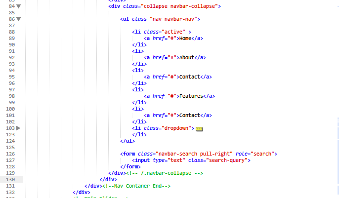
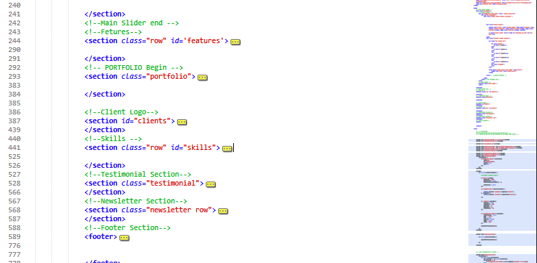

Created: 19/10/2013
By: CodeHound
Email: youremail@yourdomain.com
Thank you for purchasing my theme. If you have any questions that are beyond the scope of this help file, please feel free to email via my user page contact form here. Thanks so much!
This theme is divided in two layouts full width and boxed width general structure.
Below is the structure of the Navbar Item
The Main Body is divided into many sections and the structure is similar to the below image
If you would like to edit the color, font, or style of any elements in any part of theme, you would do the following:
#sectionID a {
color: #someColor;
}
If you find that your new style is not overriding, it is most likely because of a specificity problem. Scroll down in your CSS file and make sure that there isn't a similar style that has more weight.
I.E.
#wrapper #sectionID a {
color: #someColor;
}
So, to ensure that your new styles are applied, make sure that they carry enough "weight" and that there isn't a style lower in the CSS file that is being applied after yours.
href="css/bootstrap.css"> href="css/bootstrap-overrides.css"> href="css/bootstrap-responsive-overrides.css"> href="css/style.css"> href="css/style-responsive.css"> href="css/style2.css" />
I am using "bootstrap-overrides.css" to override some component of bootstrap without actually touching the original css and there is bootrap-responsive-overrides.css to handle particular responsive issues regarding bootstrap elements. then there is "style.css" where all the main styling for particular elements are written. "style-responsive.css" handles all the responsive behavior of our theme elements which are not handled by bootstrap.
/* === Header Section === */
#nav-container {
position: relative;
z-index: 900;
width: 100%;
}
#elegantnav-full-width{
border-top: 5px solid #508ddd;
background-color: white;
box-shadow: 0px 2px 3px gray;
}
#elegantnav-half-width{
top:0;
border-top: 5px solid #508ddd;
z-index: 1000; /*handles the fixed position on its own, not by Bootstrap*/
max-width: 1020px;
width: 100%;
position: fixed;
background-color: white;
box-shadow: 0px 2px 3px gray;
}
/* === Main Section === */
.section_header {
margin-left: 5.41%;
margin-top: 9.89%;
color: #6a6a6a;
width: 62.00%;
text-align: justify;
}
.section_header b {
color: #2a92e5;
}
section{
padding-top: 50px;
}
h1,
h2,
h3,
h4,
h5,
h6 {
font-family: "Coda", sans-serif;
color: #5c5b5b;
}
p {
color: #5c5b5b;
}
ul,
ol {
margin: 0px;
list-style: none;
}
a {
color: white;
-webkit-transition: color 0.3s;
-moz-transition: color 0.3s;
-o-transition: color 0.3s;
-ms-transition: color 0.3s;
transition: color 0.3s;
}
a:hover {
text-decoration: none;
color: #508ddd;
}
a:focus,
.btn:focus,
select:focus {
outline: none;
text-decoration: none;
}
ul,
ol {
list-style: none;
margin: 0px;
}
input[type=text]:focus,
textarea:focus {
box-shadow: none;
}
/*this css for the Portfolio*/
.portfolio_wrapper {
height: 950px;
}
/*This is css for the Features Circle */
section#features{
background-color: #2a92e5;
margin: 0;
padding: 0;
}
#features .feature {
float: left;
background-color: #2a92e5;
margin: 0px;
width: 25%;
-webkit-transition: all 0.3s;
-moz-transition: all 0.3s;
-o-transition: all 0.3s;
-ms-transition: all 0.3s;
transition: all 0.3s;
}
/*Portfolio*/
.portfolio-grid {
padding: 20px 0;
list-style: none;
text-align: center;
}
.portfolio-grid li {
display: block;
float: left;
width: 25%;
margin: 0;
padding: 20px;
text-align: left;
position: relative;
}
.portfolio-grid figure {
margin: 0;
position: relative;
}
.logo {
margin: 30px 15px;
border-radius: 10px;
-webkit-transition: all 0.3s;
-moz-transition: all 0.3s;
-webkit-transition: all 0.3s;
}
.logo img {
display: block;
margin-left: auto;
margin-right: auto;
border-radius: 10px;
}
.logo:hover {
-webkit-box-shadow: 0px 0px 10px #777;
-moz-box-shadow: 0px 0px 10px #777;
box-shadow: 0px 0px 10px #777;
-webkit-transform: scale(1.1);
-moz-transform: scale(1.1);
transform: scale(1.1);
}
/* === Sidebar Section === */
.blog-sidebar .search{
margin-top: 38px;
}
.blog-sidebar .search-query{
float: left;
border: 1px solid #2a92e5;
height: 38px;
width: 240px;
border-radius: 0;
margin-top: 30px;
}
.blog-sidebar .btn{
color: white;
border-radius: 0;
float: left;
background-color: #2a92e5;
width:41px;
height:38px;
margin-left: 0px;
margin-top: 30px;
}
.blog-sidebar .blog-header{
font-size: 16pt;
line-height: 30px;
}
/* === Footer === */
footer {
color: #fff;
float: none;
width: 100%;
background: #4d4851;
/* Old browsers */
background: -moz-linear-gradient(top, #4d4851 0%, #110f16 0%, #222226 49%, #110f16 100%);
/* FF3.6+ */
background: -webkit-gradient(linear, left top, left bottom, color-stop(0%, #4d4851), color-stop(0%, #110f16), color-stop(49%, #222226), color-stop(100%, #110f16));
/* Chrome,Safari4+ */
background: -webkit-linear-gradient(top, #4d4851 0%, #110f16 0%, #222226 49%, #110f16 100%);
/* Chrome10+,Safari5.1+ */
background: -o-linear-gradient(top, #4d4851 0%, #110f16 0%, #222226 49%, #110f16 100%);
/* Opera 11.10+ */
background: -ms-linear-gradient(top, #4d4851 0%, #110f16 0%, #222226 49%, #110f16 100%);
/* IE10+ */
background: linear-gradient(to bottom, #4d4851 0%, #110f16 0%, #222226 49%, #110f16 100%);
/* W3C */
filter: progid:dximagetransform.microsoft.gradient(startColorstr='#4d4851', endColorstr='#110f16', GradientType=0);
/* IE6-9 */
}
.footer-header-wrapper {
background-image: url(../img/footer-header-pattern.png);
background-repeat: repeat;
//padding: 0 5%;
border-top: 4px solid #508ddd;
margin: 0;
animation: footerFlow 1s;
-webkit-animation: footerFlow 1s;
/* Safari and Chrome */
animation-iteration-count: infinite;
-webkit-animation-iteration-count: infinite;
-webkit-animation-timing-function: linear;
animation-timing-function: linear;
}
.footer-header {
line-height: 50px;
font-family: 'PT Sans', sans-serif;
font-size: 18pt;
text-align: left;
text-transform: uppercase;
text-shadow: 0px 0px 1px white;
}
#footer-body {
width: 100%;
}
footer #footer-body ul {
font-size: 11pt;
list-style: none;
padding: 0;
}
footer #footer-body li {
padding: 10px 0;
clear: both;
border-bottom: 1px solid gray;
}
#footer-categories li:before {
content: '+ ';
font-size: 18pt;
font-weight: bold;
}
.footer-section-body {
padding: 15px 10px 15px 0;
}
#footer-tweeter-feed img {
float: left;
}
#footer-tweeter-feed p {
float: left;
}
etc, etc.
If you would like to edit a specific section of the site, simply find the appropriate label in the CSS file, and then scroll down until you find the appropriate style that needs to be edited.
Any images that are placed within the blog section have 5px worth of padding and a light bluish background. If you would like to edit the display of these images, find the following section in the style sheet:
#sectionID #blog img {
change styles here:
}
This theme imports three Javascript files.
[$('.testimonial-slider').bxSlider({
infiniteLoop : true,
mode : 'fade',
auto : true,
controls : false,
pager : false,
speed : 2000
});
adjustPortfolioHover(20);
]
This custom jquery handles the testimonial portion of our about and home page.
[$('.dropdown-menu').hover(function() {
$(this).closest('.dropdown').addClass('active');
}, function() {
$(this).closest('.dropdown').removeClass('active');
});]
This Custom Jquery handles the dropdown menu part when clicked it causes the hover effect to stay at its place.
[some Javascript goes here...along with an general explanation]
[$('#iview').iView({
pauseTime : 7000,
pauseOnHover : true,
directionNavHoverOpacity : 0,
autoAdvance : false
});]
This Script corresponds to iview slider
[$('.slider3').bxSlider({
controls : true,
slideWidth : 200,
minSlides : 4,
maxSlides : 4,
slideMargin : 10
});
]
This script corresponds to bxSlider(client logo)
I've included three psds with this theme:
If you'd like to change the main image in the header, open "header.psd", make the necessary adjustments, and then save the file as "headerBG.png". Do the same for the buttons.
Include any more specific information about your psds.
I've used the following images, icons or other files as listed.
Once again, thank you so much for purchasing this theme. As I said at the beginning, I'd be glad to help you if you have any questions relating to this theme. No guarantees, but I'll do my best to assist. If you have a more general question relating to the themes on ThemeForest, you might consider visiting the forums and asking your question in the "Item Discussion" section.
Your Name